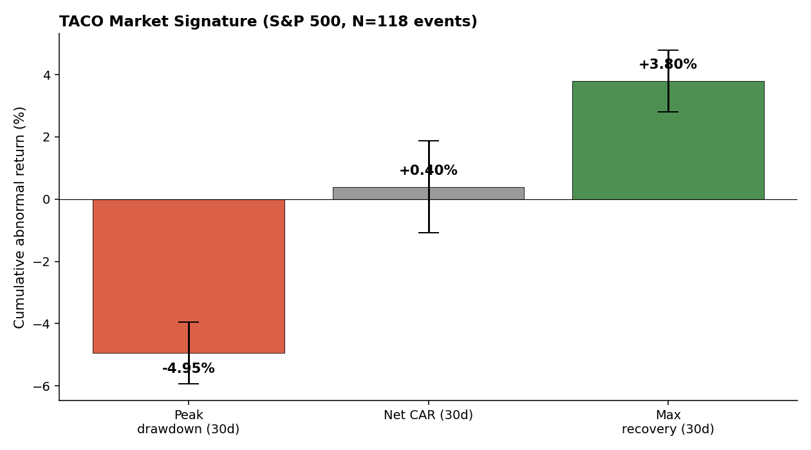
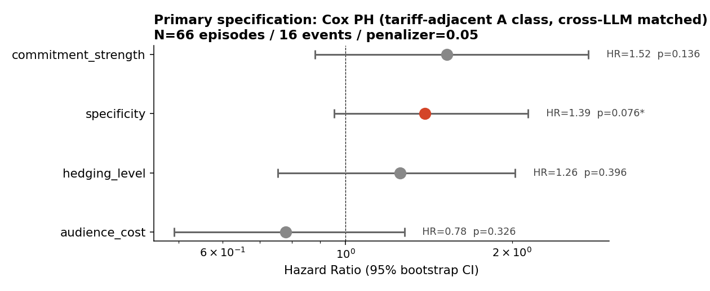

A quantitative dissection of every tariff-relevant Trump Truth Social post.
What does the text tell us? Does the market really chicken out?
Vol. 1 · Issue 1
May 12, 2026
N=6,943 posts · 27 matched · 16 events
T
ariff threats fly. Markets dip. The threat dies. Markets recover. The cycle—dubbed
TACO ("Trump Always Chickens Out") by an FT columnist in
May 2025—has reportedly netted some hedge funds double-digit Q1 returns.
But behind the punchline sits a real empirical question: can you actually
predict which Trump threat will be walked back from the text alone?
Spoiler
Mostly no. The single textual feature that survives nine rounds of robustness
checks is specificity: threats with named targets and
explicit deadlines resolve faster (HR ≈ 1.4, p ≈ 0.08). The headline market
pattern (drop, then recovery) also shows up on random non-Trump dates
in the same period. The interesting story turns out to be about
measurement, not prediction.
i. The path looks like TACO. The math is less convinced.
Following each Trump tariff-related Truth Social post, the S&P 500 traces a
familiar shape over the next 30 trading days: a sharp dip, then a partial recovery.
On average, the index drops −4.95% at its worst,
then recovers +3.80%, ending roughly flat.
Avg peak drawdown
−4.95%
over 30 trading days
Avg max recovery
+3.80%
from trough
Net 30-day CAR
+0.40%
near zero

The TACO market path. S&P 500 cumulative abnormal returns over 30 trading days following 118 A-class posts. Error bars are 95% CI.
Placebo
When we run the same calculation on 200 random non-Trump-post dates from
the same period, the path looks essentially identical: peak drawdown
−4.45%, recovery +3.30%. Differences are not significant (p > 0.39).
The TACO pattern describes general market behavior during Trump's second
term; we can't isolate a Trump-specific causal effect with daily data.
Did the market distinguish threats that were eventually executed from
those that got walked back? No. Executed (N=45): drawdown −5.16%.
Walked back (N=17): drawdown −3.25%. Difference: not significant (p=0.17).
At the moment a threat hits the wire, the market reacts the same way
regardless of how it will resolve.
ii. One textual feature does carry signal: specificity.
We classified every Trump Truth Social post since the 2024 election (N=6,943)
using two independent LLMs (Claude Haiku 4.5 and GPT-4o-mini). Only when both
LLMs agree a post is an A-class economic threat do we keep it.
That gives us 141 consensus posts, which cluster into
110 policy episodes. Narrowing to tariff-related sub-domains
leaves 77 episodes; cross-LLM matching to a hand-compiled 43-event tariff
timeline gives 27 consensus matches with 16 resolved outcomes.
On this clean sample, we ran a Cox proportional hazards model with 1,000
bootstrap iterations. Of four key linguistic features, the one that pops:
specificity
HR = 1.39[0.95, 2.14]
pemp = 0.076
A one-SD increase in BT-ranked specificity is associated with a 1.39× hazard
of policy resolution. More specific threats (named targets, explicit
deadlines, concrete percentages) resolve faster, either by execution or
walk-back.

Forest plot of hazard ratios from the primary specification (N=66, 16 events). Bootstrap 95% CIs.
Power note
With 16 events and 4 covariates, we're at ~4 events per variable
(well below the 10:1 rule). Power to detect HR=1.4 at α=0.05 is about 0.40.
To confirm this effect we'd need ~80 events—about five times what
we have. Treat this as direction-consistent, not confirmed.
iii. Under human-validated matching, the signal dissolves.
The LLM-only result above relies on cross-LLM consensus matching: two
independent LLMs agree on which policy event a Trump post refers to. We
manually re-evaluated all 27 of these consensus matches plus a battery of
controls (75 cases total). Then we re-ran the Cox model using human-anchored
matches instead.
Specification
N / events
HR (specificity)
p
LLM-only matching (primary)
66 / 16
1.39
0.076 ⋄
Human-validated matching 👤
64 / 16
1.15
0.42 NULL
What human review found
Of 27 LLM consensus matches, the human reviewer agreed with 17 (63%
precision) and judged 10 as wrong-topic or missing from the
candidate set. Sanity-check controls passed: 100% on "both-LLMs-said-none"
cases, 92% on fake controls where the true match was silently removed from
the candidate list. So the LLM matcher is good but not perfect, and the
marginal specificity signal in the primary spec is partly carried by
matches the human would reject. The direction (HR > 1) holds; the
significance does not.
We also tested seven additional sensitivity specifications (different
ground-truth source, broader vs narrower A-class, regex vs LLM status
inference, original vs anonymized pairwise scoring). Across all nine
LLM-only specifications, the specificity HR ranges from 1.06 to 2.17 and
is above 1 in eight of nine. Full table in §5.4 of the paper.
Two mid-pipeline specifications looked publishable but didn't survive
adjacent robustness checks. One was a Python \b
word-boundary bug in regex status inference that mis-classified 30% of
upstream policy-event labels. The other was a single-LLM result (Claude with
anonymized 1-7 pairwise scoring, HR=2.17, p<0.001) that did not replicate
with GPT-4o-mini. Both are documented in §5.4 of the paper.
iv. Human validation of LLM measurement.
Two anchor numbers for the LLM-as-instrument argument, both from the same
author rating posts manually:
Specificity r(human, Claude)
0.75
N=40, p < 0.0001
Test-retest r (own)
0.84
8 hidden duplicates
LLM matching precision
63%
27 cases, human review
Claude's mean specificity rating (5.55) is 1.8 points above the author's
mean (3.73) on the same 40 posts: a systematic positive bias, but rank-order
agreement is strong. The clustering threshold (cosine 0.82) was also
empirically validated against 39 human-judged pairs (Spearman ρ = 0.78); it
sits at the transition between "different topic" and "same topic" judgments.
v. How we measured.
①
Cross-LLM consensus classification
Both Claude and GPT independently label each post as commissive economic
threat (A), commissive non-economic (B), or non-commissive (C). Only
consensus A is kept. Cohen's κ = 0.45 (moderate).
②
Episode clustering
Posts cluster into policy episodes via BAAI/bge-large-en-v1.5 embeddings
(cosine > 0.82, 30-day window). 95% of resulting episodes are
policy-area-monothematic.
③
Bradley-Terry forced-choice ratings
Trump's posts saturate at the top of 0-10 scales (mean commitment 7.6).
We additionally rate features via 200 pairwise comparisons on anonymized
text, then fit Bradley-Terry to recover a relative ranking.
④
Three-tier ground truth
Hand-compiled Wikipedia + Tax Foundation timeline (43 events, primary).
Federal Register Presidential Documents (71 EOs, validation; 90.5% cross-confirm).
LLM-cleaned PIIE (145 events, robustness).
⑤
Cross-LLM event matching
Claude and GPT independently match each episode to one of the candidate
events in a [-10, +60d] window. We keep only matches both pick the same
event (N=27 out of 77 narrow-tariff episodes).
⑥
Cox PH + 1,000 bootstrap + placebo
Survival modeling on duration to resolution. Cluster bootstrap to handle
the 5 SCOTUS-tied events as non-independent. Placebo with random non-event
dates. DID with sector and country ETFs as Y2 robustness.
vi. What we cannot claim.
Causal identification. Survival models estimate
associations, not causal effects. Trump posts in response to market
conditions; market reacts to Trump posts; Granger tests show both
directions are weakly significant at lag 3.
Out-of-sample prediction. We do not train a forecaster.
The model estimates how the hazard varies with features in-sample.
That the TACO market pattern is Trump-specific. The
placebo test cannot reject the null that the same path appears on random
dates.
Generalization beyond Trump or beyond tariff. One actor,
one platform, one policy domain. Future work: multi-actor (Vance, Cruz,
Rubio); multi-domain (sanctions, Fed pressure).
⛯ By the numbers.
§ Notes from the basement.
This project was built by one student taking DS-GA 1015 (Spring 2026)
over about three weeks, with extensive use of Claude Code and OpenAI
APIs for classification and matching. All data is public. All findings
are exploratory. Code, paper, and replication data live at the GitHub
repo (link in the kicker).
Major thanks to the ☕ that powered weeks of debugging an
apparently-significant \bannounce\b regex match
that turned out not to match "announces."